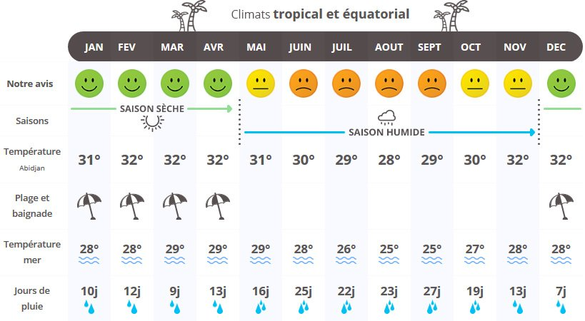
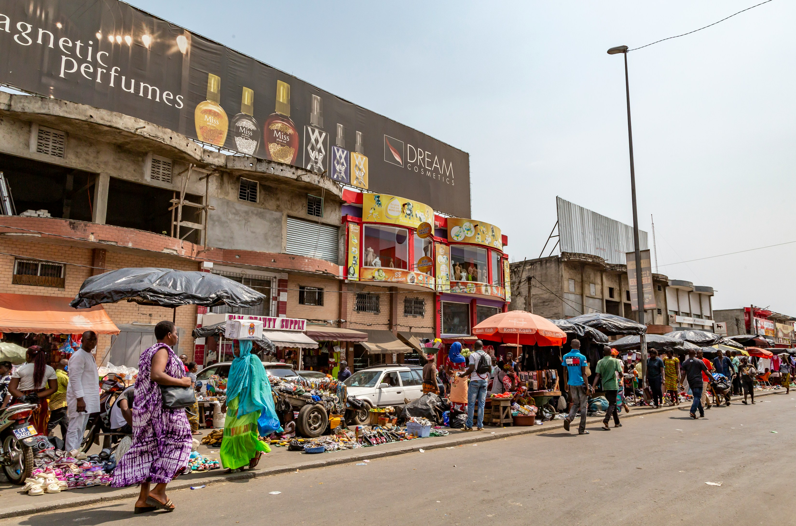
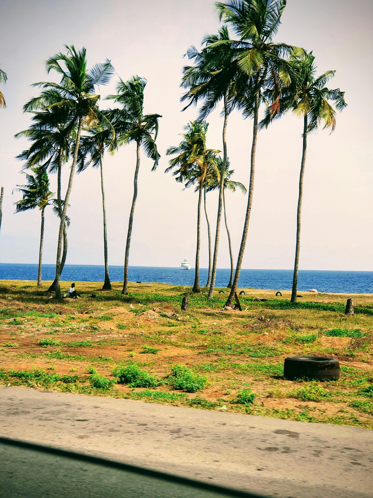
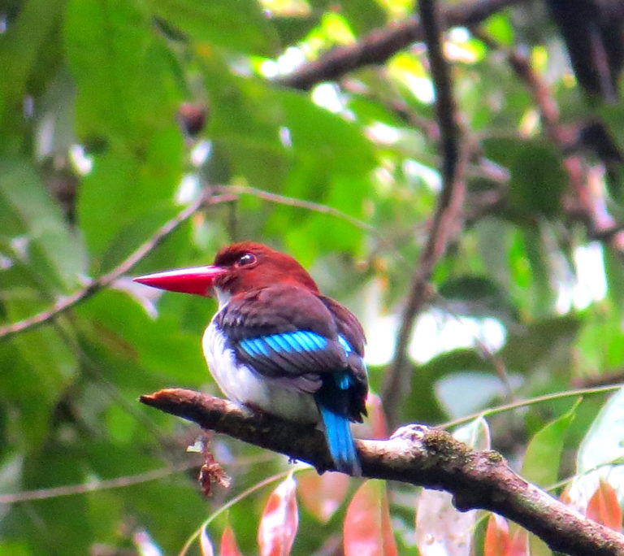
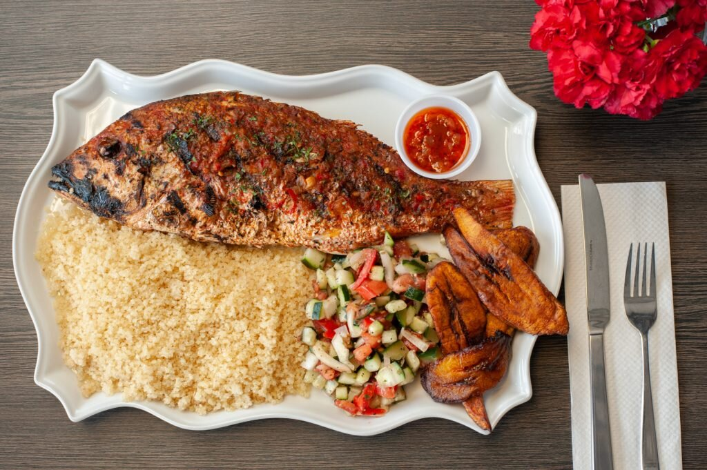
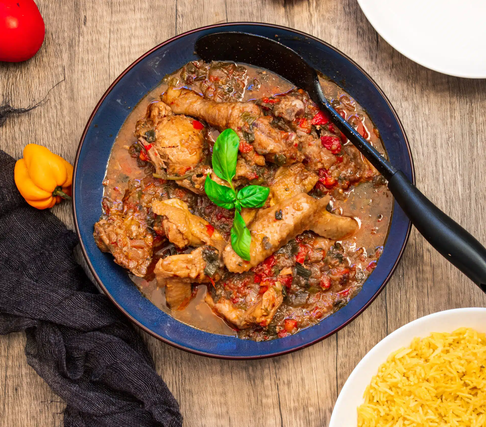
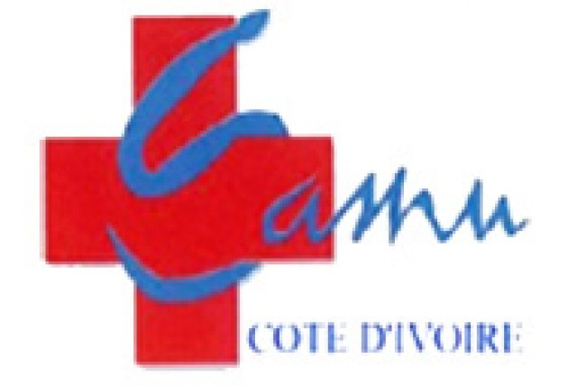

Le guide pour découvrir la Côte d'Ivoire
Bienvenue en Côte d’Ivoire, un pays vibrant de vie,
de traditions et de modernité. Entre plages dorées, forêts
tropicales et villes dynamiques, ce joyau d'Afrique de l'Ouest
séduit par sa diversité et l'hospitalité de ses habitants.
Que vous veniez pour l'aventure, la culture ou la détente, ce guide
est là pour vous accompagner dans la préparation de votre voyage et
vous donner toutes les clés pour en profiter pleinement.
Informations générales
La Côte d’Ivoire est un pays francophone situé en Afrique de l’Ouest,
bordé par l’océan Atlantique. Sa monnaie est le Franc CFA (XOF),
largement utilisé dans plusieurs pays africains. Le décalage horaire
est de +0h par rapport à l’heure universelle (UTC+0).
Le climat ivoirien est tropical : chaud et humide, avec deux grandes
saisons — la saison sèche et la saison des pluies. Adapter son voyage
au climat est important pour profiter au mieux de son séjour.
Quand partir ?

La meilleure période pour visiter la Côte d’Ivoire est entre
novembre et mars, pendant la saison sèche. Les températures sont
agréables et les routes plus praticables.
Il est conseillé d’éviter la saison des grandes pluies, de mai à
juillet, où les fortes précipitations peuvent compliquer les
déplacements et limiter certaines activités.
Les villes à ne pas manquer

Abidjan
Capitale économique animée, découvrez le quartier du Plateau, le
jardin botanique de Bingerville ou encore la Cathédrale
Saint-Paul.

Grand-Bassam
Ancienne capitale coloniale inscrite au patrimoine mondial de
l’UNESCO, parfaite pour se détendre entre histoire et bord de mer.

Yamoussoukro
Ville natale du premier président ivoirien, célèbre pour sa
Basilique Notre-Dame de la Paix, l’une des plus grandes au monde.
Man
Surnommée la "ville aux 18 montagnes", Man vous séduira avec ses
paysages verts, ses ponts de lianes et ses impressionnantes
cascades.

Parc National de Taï
Plongez dans l’une des dernières grandes forêts primaires
d'Afrique de l’Ouest, classée à l’UNESCO, et découvrez une faune
exceptionnelle.
Les plats typiques à goûter absolument
La Côte d’Ivoire est un paradis pour les gourmands. Voici quelques
spécialités incontournables à découvrir pendant votre séjour :


-
L'attiéké : Couscous de manioc à la texture légère, souvent
servi avec du poisson grillé et des légumes frais. C'est l’un
des plats emblématiques du pays.
-
🍅 Le garba : Un plat populaire et rapide, composé
d'attiéké et de thon frit, agrémenté de piment et de sauce
tomate. Parfait pour un déjeuner sur le pouce !
-
L'aloco : Bananes plantains frites, souvent servies avec du
poisson frit ou du poulet. Un délice sucré-salé très apprécié.
-
Le foutou : Une pâte dense préparée avec de la banane plantain
ou de l’igname, accompagnée d'une sauce graine ou d'une sauce
claire, souvent avec du poisson ou de la viande.
-
🍗 Le kedjenou : Poulet (ou pintade) mijoté à l’étouffée
avec des légumes, dans une sauce légère et savoureuse.
Traditionnellement cuit dans une jarre en terre cuite.
-
Conseil : N'hésitez pas à goûter les jus locaux comme le bissap
(hibiscus) ou le gingembre, parfaits pour se rafraîchir sous la
chaleur ivoirienne.
Formalités et documents
Pour entrer en Côte d’Ivoire, un passeport valide est obligatoire, ainsi
qu’un visa, à demander en ligne via la plateforme officielle ou auprès
des ambassades.
Le vaccin contre la fièvre jaune est également requis, et votre carnet
de vaccination pourra vous être demandé à l’arrivée. Il est recommandé
d’être à jour pour d’autres vaccins comme l’hépatite A, l’hépatite B et
la typhoïde pour voyager en toute tranquillité.
Numéros utiles pour votre séjour

Urgences médicales : 185

Ambassade de France à Abidjan : (+225) 27 20 20 74 00
Taxis fiables
(Application mobile)
Les gestes culturels à connaître
Pour vivre une expérience encore plus authentique en Côte d’Ivoire,
voici quelques gestes simples qui seront très appréciés :
Saluer
est essentiel : Un simple « Bonjour, ça va ? » ouvre toutes les portes.
La politesse est très importante dans la culture ivoirienne.
Utiliser la main droite : Pour donner ou recevoir quelque chose,
utilisez toujours votre main droite ou les deux mains. Le tutoiement est
courant : Dès la première rencontre, beaucoup de gens tutoyent
naturellement, surtout dans un contexte amical ou informel. Sourire et
bonne humeur : En Côte d’Ivoire, l'humour et le sourire font partie du
quotidien. Même dans les négociations ou les discussions sérieuses,
garder une attitude détendue est toujours mieux vu.
Respect des
anciens : Montrer du respect envers les personnes plus âgées est très
important, que ce soit en leur adressant la parole en premier ou en se
levant pour les saluer.
Astuce : En apprenant quelques mots
simples comme "Akwaba" (Bienvenue en akan) ou "N'gbé" (Merci en baoulé),
vous marquerez des points et créerez des liens facilement.
Les souvenirs à rapporter de Côte d'Ivoire
Envie de ramener un bout de la Côte d’Ivoire chez vous ? Voici quelques
idées de souvenirs authentiques à mettre dans votre valise : Le pagne :
Tissu coloré emblématique d'Afrique de l'Ouest. Vous en trouverez de
magnifiques motifs sur les marchés locaux. À porter ou à transformer en
objets déco !
Les sculptures en bois : Masques traditionnels,
figurines ou objets d’artisanat, souvent faits à la main par des
artistes talentueux.
Le café ivoirien : Le pays produit un
excellent café, souvent torréfié de façon artisanale. Parfait pour les
amateurs de bons arômes.
Le cacao : La Côte d’Ivoire est le
premier producteur mondial de cacao. Vous trouverez du chocolat local de
qualité pour offrir ou savourer.
Les bijoux traditionnels :
Colliers, bracelets et boucles d'oreilles faits en perles, en bronze ou
en coquillages.
Les produits cosmétiques naturels : Beurre de
karité pur, huiles d'argan ou de coco, savon noir… Conseil : Privilégiez
l’artisanat local pour soutenir les petites entreprises et éviter les
objets industriels importés !
Bonus : Check-list avant de partir
Avant votre départ, assurez-vous d'avoir en main : votre passeport,
votre visa, votre carnet de vaccination à jour, une assurance voyage,
des répulsifs anti-moustiques, de la crème solaire, un adaptateur
électrique (si nécessaire), ainsi qu’une trousse de premiers soins
contenant les médicaments essentiels. Rendez-vous sur notre page check-list pour ne rien oublier dans votre valise ou téléchargez la liste ici pour l'emporter partout avec vous !

.png)